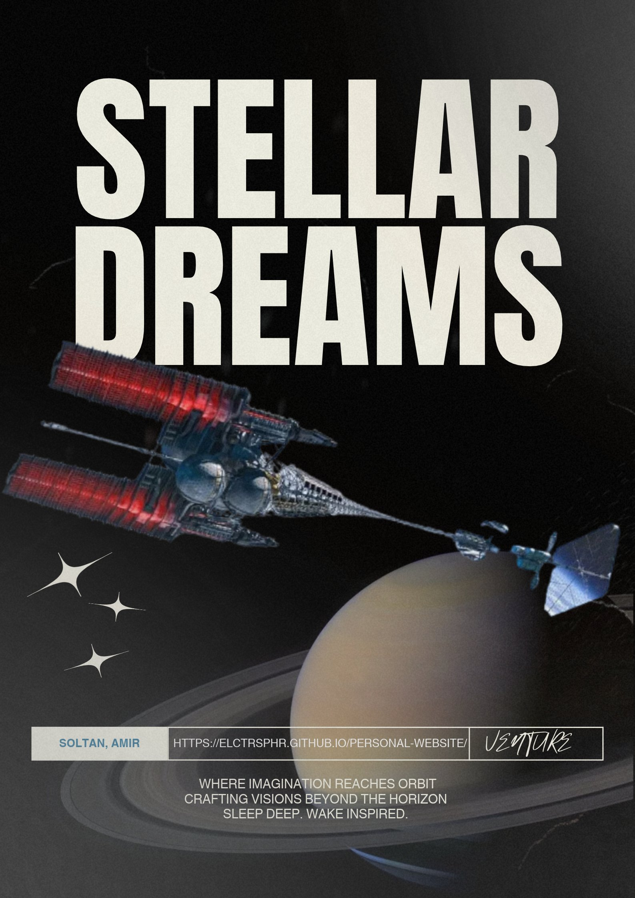

Discipline
Talent opens the door, but discipline keeps you in the room. I show up and do the work, even on days I don't feel like it.
Stellar Dreams · IR001 Portfolio
|
I'm Amir Soltan. This is where I look honestly at who I am, where I've been, and the trajectory I'm setting for the next fifteen years.

Where imagination reaches orbit.
Crafting visions beyond the horizon.
Sleep deep. Wake inspired.

What it means. Stellar Dreams is how I want my work to be remembered: big ideas that actually get launched. The starship is the ISV Venture Star, the ship that pulled me into interstellar design and inspired my Tachyon 714 light sail, heading for a ringed world, the way I'm heading for goals that once felt out of reach. Venture is my signature, because every project is a voyage into something I haven't done before.
The story of who I am, told with evidence, context and honest reflection.

A competitor at heart, a creator by choice, and a stargazer who never treats the sky as the limit.
Personality. I'm calm under pressure, focused, and quietly stubborn about getting things right. Years of competitive play made me analytical: I like to break problems apart, study what went wrong, and come back better. I'm also a romantic at heart. I write poetry and letters for the person I love, because some things deserve more than a quick message.
Interests & passions. Games are where everything I love meets: logic, art, story and competition. Outside of them, I'm drawn to astronomy and aerospace, to music that keeps me locked in, and to films like Interstellar and Blade Runner 2049 that make the universe feel huge and personal at the same time.
Meaningful experiences. Being accepted onto a professional Overwatch team in 2019 changed how I see myself. It was the first time I was trusted to perform at a high level, and it taught me that talent only matters when it's paired with discipline and trust in a team.
Reflection Writing this made me notice a pattern: everything I love involves exploring something bigger than me, whether that's a match, a codebase or the night sky. That curiosity is the thread that ties my whole story together.
College of Innovation and Integrated Technology
The program I always wanted. I'm going deep into programming and 3D modeling and finally learning the formal craft behind the games and software I've been building on my own. Influence: it gave my passion a structure and a clear path to a career.
3,000+ hours of coding, modding & 3D work
After graduating Grade 12, I started learning to code seriously on my own. Most of my technical skills came from building things myself: C++ applications, a Kerbal Space Program mod, and this website. Influence: it taught me how to learn: read, try, break it, fix it, repeat.
CEU Malolos
A track with little connection to the career I wanted. Influence: it wasn't the right fit, but it gave me the science foundation of STEM, taught me patience and empathy for people, and made me certain of where I actually belonged.
Professional Overwatch Team
Not a classroom, but one of my most important teachers. I'm taking a break from competing for now. Influence: it taught me discipline, communication, and the habit of reviewing every loss until it becomes a lesson.
Reflection My education didn't follow a straight line, and I've stopped seeing that as a weakness. The detour through caregiving gave me conviction, and teaching myself to code after Grade 12 means I arrive in BSEMC already knowing why I'm here.
I break large problems into small, logical pieces, whether it's a match round or a C++ bug.
I can take an idea from concept to a working, good-looking result, as with my light sail mod.
I test and revise until the details hold up to a high standard.
Professional competition taught me to stay calm and keep thinking clearly when it counts.
Astronomy and aerospace keep me asking bigger questions and connecting them to real work.
I can keep polishing long after something is good enough, which delays finishing.
Improving: I set a clear "done" point and deadline before I start, then ship and iterate.
When I'm locked into something I love, routine tasks and rest can slip.
Improving: time-blocking my week and finishing must-do tasks before passion work.
Being largely self-taught and coming from a caregiving track, I have gaps in math and computer-science theory.
Improving: treating BSEMC fundamentals seriously and practising beyond what's assigned.
Self-assessment insight My biggest strength and my biggest weakness come from the same place: I care a lot about getting things right. The goal isn't to care less. It's to point that energy at finishing, not just polishing.
Talent opens the door, but discipline keeps you in the room. I show up and do the work, even on days I don't feel like it.
No tournament was ever won alone. I trust the people around me and work to be someone they can trust back.
There's always more to explore than what we can see. I'd rather ask one more question than assume I know the answer.
A loss isn't the end, it's information. I review mistakes honestly, adjust, and go again.
I say what I mean and mean what I say, in my work and with the people I love.
I released my light sail mod as open source because the communities that taught me deserve something back.
Reflection Most of these values weren't taught to me in a lecture. I learned them by losing, by being trusted and by being helped. That's why I hold onto them: I know exactly what they're worth.
To become a game developer and software engineer whose work makes people feel the wonder I feel looking at the stars, and the thrill I feel when a match comes together.
To keep learning the craft every day, build games and tools that bring people together, share what I make openly, and carry the discipline of competition into everything I create.
Life purpose I want to create worlds that other people can get lost in, the way I got lost in games, films and the night sky growing up. If something I build gives someone that feeling, I've done what I'm here to do.
First-place tournament finishes
Years of competitive Overwatch
Hours of coding experience
Projects publicly released
The moment I was first trusted to compete at a high level, and where my discipline was built.
Every win came the same way: together, one round at a time, after reviewing every loss.
Finished the STEM strand at CEU Malolos, and left it certain of the direction I wanted.
A real-time C++ audio visualizer with Spotify lyric sync, fully overhauled for its second release.
Evidence: GitHub →My own interstellar light sail mod for Kerbal Space Program, published for anyone to use.
Evidence: SpaceDock →Chose and started the program built around exactly what I want to do with my life.
Reflection Looking at these together, the achievement I'm proudest of isn't a trophy. It's that I keep finishing things and putting them out into the world, even when they're not perfect.
A laser-pushed interstellar light sail for Kerbal Space Program: a 2.8 m canister that deploys a seed pod on carbon-nanotube tethers and unfolds into a 2 km mirrored dish.
Why it's here: it's where my love of space and my technical skills met for the first time in a finished, public project.
View on SpaceDock →A real-time audio visualizer built purely in C++ that syncs with Spotify, shows live lyrics, and offers three visualizer modes with deep customisation.
Why it's here: it's my clearest proof of growth. I retired my own first version and rebuilt it better.
View on GitHub →Designed and hand-coded in HTML, CSS and JavaScript, with a custom gold-and-space look, animations, and a small C++ server I wrote to preview it locally.
Why it's here: it's a living portfolio. It shows my design taste and coding skills, and it will keep growing after this course.
Visit the main site →Reflection Each of these works started as something I simply wanted to exist. Finishing them taught me more than any single lesson could: how to scope, how to debug for hours, and how to let something go public.
Turning what I know about myself into a practical direction for growth.
How I manage myself.
How I work with others.
What I can build.
What I'm actively working on.
Reflection My professional skills grew fastest because I practised them for fun. The skills I need to strengthen are the ones that don't come naturally, so they need a plan, not just enthusiasm.
By December 2028, I will design, build and publicly release a short, original space-themed game that can be played from start to finish in about 15 minutes.
One small, original space-themed game, built in a game engine using my own 3D models and programming.
A complete build with a menu, a beginning and an ending; tested by at least 15 players; at least one update released from their feedback.
The scope is deliberately small. I already have 3,000+ hours of coding and 3D modeling experience, and I'll commit 6 focused hours every week alongside school.
It moves me straight toward my 5-year goal of a game portfolio and puts what I learn in BSEMC into practice.
Concept and prototype by June 2028 · playable alpha by September 2028 · public release by December 2028.
Begin BSEMC
Release an original game
Earn my BSEMC degree
Join a studio as a developer
Lead a shipped title
My own studio & space-inspired games
No matter how high you dream, Reach for the Stars, Always.
Build worlds people remember.
Bring a champion's discipline to every project.
Stay curious about space and new technology.
Master the foundations, not just the shortcuts.
Make time for the people who matter most.
Pulse Visualizer v1: my first big C++ app. It worked, but I had outgrown the way it was built.
Pulse Visualizer 2.0: a full overhaul with better performance, more polish and deeper control.
Retiring something I was proud of taught me that growth sometimes means starting over with what you've learned. Evidence →
A player, flying missions in Kerbal Space Program and dreaming about interstellar travel.
A creator who designed and released the Tachyon 714 Light Sail for other players to use.
I moved from consuming the things I love to contributing to them. Evidence →
A caregiving track in STEM, a path chosen for me more than by me.
Studying Entertainment and Multimedia Computing, exactly what I want to build my life around.
I learned to make decisions about my future with intention instead of drifting.
2019: a new player on a professional team, still learning how to handle pressure.
Six years of competition (2019–2025) and 9 first-place finishes, built on reviewing every loss.
Consistency beat raw talent. Small improvements, repeated, became championships.
Review. Adjust. Go again.
The most important thing I've realized is that the habits that won me tournaments are the same ones that will build my career: review honestly, trust the people around you, and keep going.
My commitment is simple. I will keep learning every day, finish what I start, share what I build, and never let the stars be the limit.
“ No matter how high you dream, Reach for the Stars, Always. — Amir Soltan